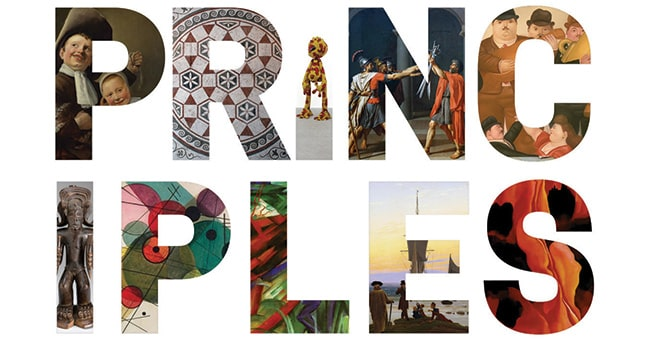
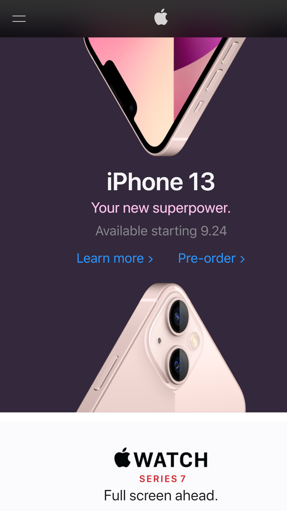
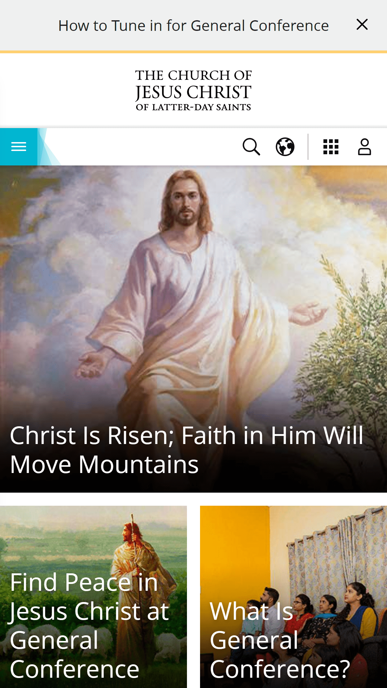

- Design -
PARC:Contrast
Apple iPhone 13
www.apple.com TheApple website and also the site page for the Apple iPhone device demonstrate the application of the design principle of contrast. The colors are very much visible , relative to other colors on the page
Visual Hierachy
BYU Pathway World Wide
byupathway.orgBYU Pathway World Wide depicts good visual Hierachy in the UX design of their front home page. With a picture of graduating students followed by their Online, Low Cost and Spiritual offerings. The content is appealing because of this visual Hierachy approach which is also evident in their heading elements.
White-Clean Designs
Church of Jesus Christ
lds.org Their website is very much visually appealing and they have a clean layout and they managed to utilise white space which led to the beautiful layout.